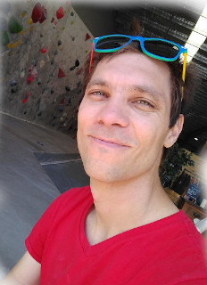

Fabio Zanini

fabio DOT zanini AT unsw DOT edu DOT au
I love single cell biology, data science, graphs, coding, fighting viral infections, the immune system, and rock climbing.
Priscilla Boon

Ying Xu

Catherine Gatt
I am a PhD student with a keen interest in computational biology, single-cell transcriptomics and evolution. Beyond studying, I love scuba diving and hiking.Sara Shavandi

Michael Li

yijie DOT li DOT 1 AT student DOT unsw DOT edu DOT au
I am an (incoming) PhD student with a keen interest in computational biology, and studies about how machine learning can be used in general medicine & health area. Beyond studying, I love playing badminton and video games.Liuyi Chen

Amber Xu
I’m a student intern working on cell atlas approximation, and I’m interested in cancer studies. I love dogs, animals, and books.Alumni
- Anneliese Mak: web development for multiorgan approximations, now student at UNSW.
- Yuancong Cheng: potyviruses in plants, now software developer at Children Cancer Institute Australia.
- Joanna Ahn: atlas approximations, now laboratory technician at Prince of Wales hospital.
- Yike Xie: dengue infection, HyperSeq, now postdoc @GU
- Danny Dien: Natural Language Processing for atlas approximations.
- Keyi Jiang: single cell omics of neonatal immunity.
- Givanna Putri: single-cell multi-omics of stem cells, HTSeq 2.0.
- Zhiyuan Yao: single cell omics of severe dengue and alphaviruses, now Computational Scientist @Janssen.
- Kevin Zhu: tutorials and algorithm for igraph, now student @UNSW.
- Viraj Kapoor: sex differences in neonatal lung disease, now medical student @UNSW.
- Ying (Christine) Xu: dengue antibody intern, now student at @UNSW.
- Carsten Knutsen: neonatal lung research professional, then research associate @Recombinetics (now back with us!).
- Paula Klavina: neonatal lung intern, now PhD student @RCSI (Ireland)
- Yasir Kusay: igraph development intern, now student @UNSW
Collaborators and kindred labs
Some friendly labs that are full of smart, kind people:
 cazencotte
cazencotte
 neherlab
neherlab
 Einav lab
Einav lab
 The Big One
The Big One
 Alvira lab
Alvira lab
 bedford.io
bedford.io
 Goo Lab
Goo Lab
 ciralab
ciralab
 Bloom lab
Bloom lab
 Cornfield lab
Cornfield lab
 Pimanda lab
Pimanda lab